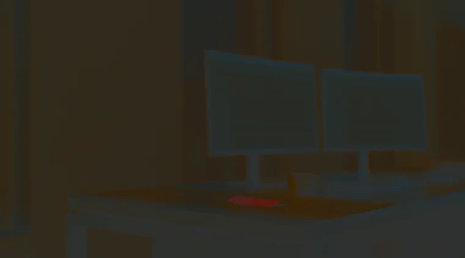
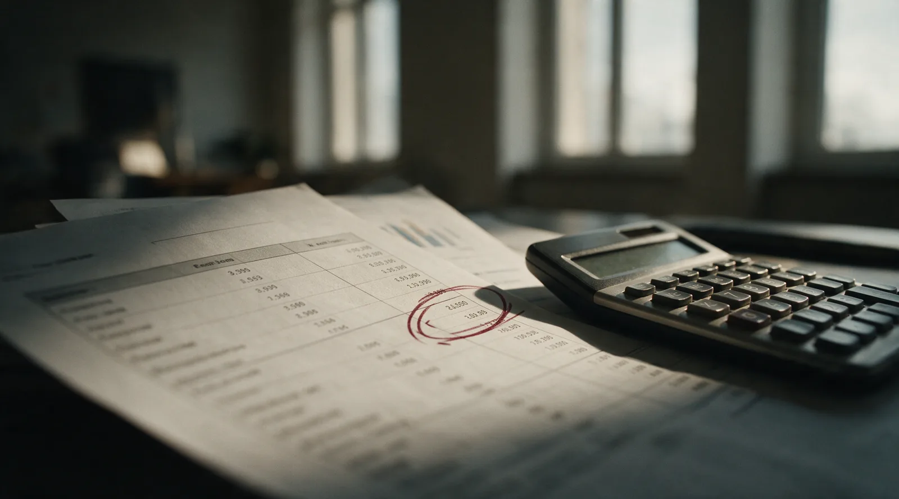
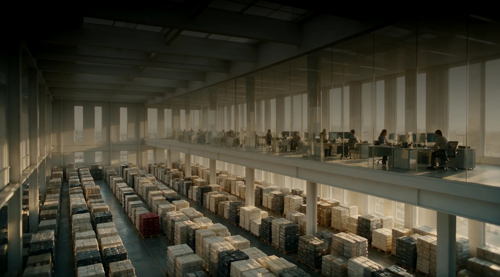

Nordwind Handel GmbH · Ticket NW-001
El ERP no es el enemigo.
Es un sistema que se aprende operándolo. Tu primer ticket, tu primer documento, tu primer asiento: aquí empieza la carrera.
Cada número descuadrado es una decisión de negocio tomada a ciegas.
Cada campo mal configurado se propaga a cada documento que lo toca después.
Y nadie nace sabiendo qué hace la contabilización de un pedido.
La diferencia entre un becario y un consultor es saber el porqué detrás de cada campo.
Entender antes de operar.
72 masterclasses. Cada una abre con la pantalla real de SAP B1, la configuración exacta y el flujo documental completo. Nada de teoría suelta: lo que ves es lo que operarás después.
72 competencias de nivel 0 a nivel 8. Finanzas, ventas, compras, inventario, banco, reporting. El mapa completo de SAP Business One.

Practicar sin miedo a romper nada.
Entender, práctica guiada con pistas, demostrar dominio sin ayuda. El simulador responde campo a campo y te dice exactamente cuál falló y por qué.
Seis motores de actividad: simulador de ventanas, caza de errores, asientos contables, forense documental, predicción de consecuencias y configuración.

Resuelve 72 tickets. Mueve la empresa entera.
De becario a arquitecto. Cada ticket cerrado mejora un proceso de verdad: el DSO baja, el stock se libera, los errores operativos se desvanecen.
La empresa que dejas no es la que encontraste.
Libro mayor · Nordwind Handel GmbH
- NW-001Primer inicio de sesión0,00
- NW-018Condición de pago equivocada+1.240,00
- NW-040Stock fantasma en almacén 02-3.850,00
- NW-061Cierre de ejercicio automático+12.900,00
- NW-072Arquitectura de aprobaciones+31.500,00